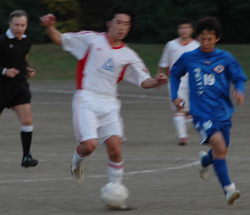
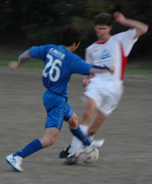

|
OiFuto, Saturday 1st December,
Swiss vs. Jets on Saturday, great day for a match at Oifuto as the pitch appeared to have been unused following the light rain on Friday evening. Other than the strange "circle" in midfield which even caused the referee to reprimand encroachers for being aggressive, the smooth surface at Dai 1 is typically a joy to play on. Unfortunately, this writer's age is becoming more of a problem as covering the expansive pitch at Oifuto has me begging for 5 a side on Thursday nights.
Regarding the match, the Jets have a solid defense and have strengthened the midfield with some fit Japanese players on the outside. The Swiss have recently upgraded in a couple of departments as well and they were pretty confident going in. Unfortunately, things are never as easy as they appear and the 1H was truly a struggle. The Swiss moved it well around the back but had difficulty passing through midfield and connecting with Kirk and Yan up front as the Jets back four held well and were solid in the air. The Jets meanwhile were stronger in midfield, picking up a lot of loose balls and pushed it forward quickly to their speedy forward or leading scorer Nate. They got through a couple of times but shots rarely hit the target while Raffa and Yuji were very strong in the center of defense. The first half ended scoreless with the Swiss doing more searching than discovery while the Jets seemed satisfied as I didn't hear them yelling at each other.
The 2H started with a little more conviction by the Swiss while the Jets started to rotate players. The game started to open up as both teams put more effort in on the tackles and moved forward with numbers. The Swiss tried to move it forward with more speed, hoping to catch the Jets on a counter although speed wise, the Swiss are missing that ability these days. The referee started to get an earful as well as both teams started to let their frustrations spill out. Finally, the atmosphere turned with about 20 minutes to go. The deadlock was broken as a loose ball in the area popped to Kirk on the left side of the box, he turned towards goal and left footed it across the face of goal into the right hand side for a 1-0 lead. Unfortunately, the lanky one pulled his hamstring on the play and had to come out of the game to be replaced by speedy Suzuki. About 5 minutes later, Aoki sent in a beautiful cross from the right to Suzuki at the far post and he coolly side footed it in for a 2-0 lead. 2 minutes later, a long ball down the left side, a great solo run by Jets forward Ryan Loren, and his fantastic shot into the upper left hand corner past Peter Pauli meant it would be a tense finish with the Swiss up 2-1. Unfortunately, you won't hear about it in this report as this writer was in the shower while the Jets apparently had numerous chances to tie, if not win, the game in the final few minutes. If there is a Jet writer to relay the agony, yoroshiku. If not, I'll finish this report with a congratulatory note to the Swiss for their phenomenal ability to wring victory from the hands of defeat..
Report by Cap'n Kirk
|